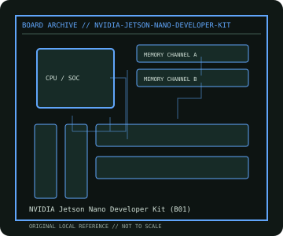

[ INDIVIDUAL COMPONENT // MOTHERBOARDS ]
NVIDIA Jetson Nano Developer Kit (B01)
Embedded AI developer SBC, 2019 B01 carrier-board revision. This record documents the named model and its documented variants; confirm the PCB revision, submodel and firmware on the physical unit.

REVISION WARNING: Similar model names and PCB revisions may have different processors, connectors or firmware. Read the silkscreen and assembly code; use the support files for that exact board variant.
Specifications
| Catalog subcategory | Integrated and compact boards |
|---|---|
| Exact model / era | NVIDIA Jetson Nano Developer Kit (B01) — Embedded AI developer SBC, 2019 B01 carrier-board revision |
| CPU and socket / SoC | NVIDIA Tegra X1 (T210) system-on-module with quad-core Arm Cortex-A57 and 128-core Maxwell GPU; module is not a socketed desktop CPU |
| Chipset / platform | Tegra X1 SoC / NVIDIA Jetson Nano module |
| Memory | 4 GB LPDDR4 on module, not a field-upgradeable DIMM |
| Slots and connectivity | B01 carrier board: 40-pin expansion header, two MIPI CSI-2 camera connectors, four USB 3.0 plus USB 2.0 Micro-B, Gigabit Ethernet, HDMI and DisplayPort; microSD boot |
| Firmware | JetPack/L4T BSP and device-tree support are carrier/module-specific; follow NVIDIA Jetson Nano Developer Kit guide and recovery instructions. |
Compatibility and revision notes
B01 is distinct from the A02 carrier; connectors/camera routing differ. Use the supported 5 V supply and approved JetPack image; storage boots from microSD.
Socket, connector shape and family branding alone do not establish compatibility. Verify the exact processor list, minimum BIOS, memory population table, power input, dimensions, and shared-lane behavior in the cited manual before installation.
Preservation and repair
Photograph the module and carrier revision before separating them. Check the microSD socket, barrel input polarity and heatsink contact; use the NVIDIA force-recovery procedure and preserve the L4T release/device-tree version.
For archival preservation, photograph the PCB, labels, connectors and included accessories before cleaning. Record serial/date codes, firmware versions, known faults, prior repairs and test conditions; use ESD-safe handling and do not power a board with loose conductive hardware beneath it.
Sources & further reading
- NVIDIA Jetson Nano Developer Kit (B01) — product/manual referenceModel-specific platform, board layout and interface reference.
- NVIDIA Jetson Nano Developer Kit (B01) — support and firmware resourcesSupport documentation; match the PCB revision, CPU support list and firmware release to the physical board.
Manufacturer/model documentation is the primary reference. Where vendor support is archived, match its revision notes to the board and do not cross-flash firmware from a similar product.